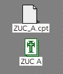

Trying Zuc
Getting Zuc to work was way much easier than my attempt are trying to get Scores to work. It came on a very obvious infected program.
The icon is of the infected program...
Using ResEdit we can see it has an init in its code :P

And the icon is labeled "Blesser icon"
This is the main screen for the infected program that has ZUC on it. A quick search does me give the exact same thing at the Macintosh Repository for this exact program..
Not much interesting stuff when looking at the extra info on it

Running the file brings up this. Clicking cancel closes the program so you don't actually see what is behind the option to pick a folder

After opening the file and clicking around a little bit, we can assume that the infection has begun since we ran the infected program.
After waiting a few minutes, one of Zuc's payloads which is to make the mouse move diagonally when the mosue buttons are clicked are already starting to show.